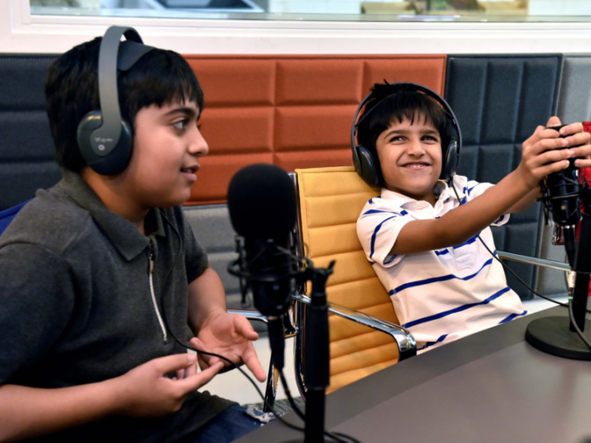

Our solution
A research from 2005 shows that up to 93% of Ugandans listen to the radio at least once a week. In other developing countries, an average of 75% of the population have radios in their home. Our solution is therefore to organize an activity camp where children can gather, share their opinions, and express themselves while having fun. The children will have the opportunity to play with each other and get to know each other through games, and then during breaks they will have the opportunity to discuss environmental issues. Save the Children will provide a stand where children can interview each other and their inputs will be recorded in both audio and video.
Source: https://gulfnews.com/going-out/society/uae-radio-station-for-children-helps-shape-a-mature-outlook-1.1897039
The children’s stories will be shared through local radio broadcast to reach the local audience. This will have the potential to give people in similar conditions a feeling of fellowship, and encourage them to share their own story as well. The recordings can also be used to create videos and podcasts which can be used by different media throughout the world.